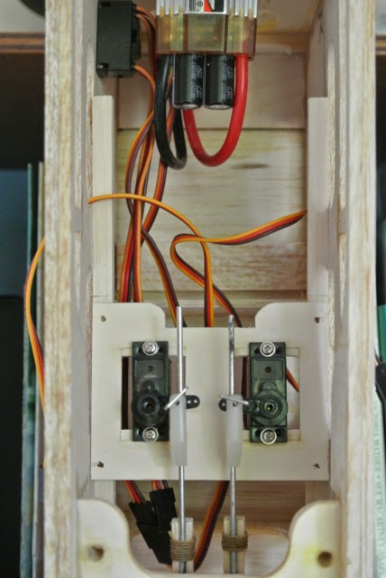
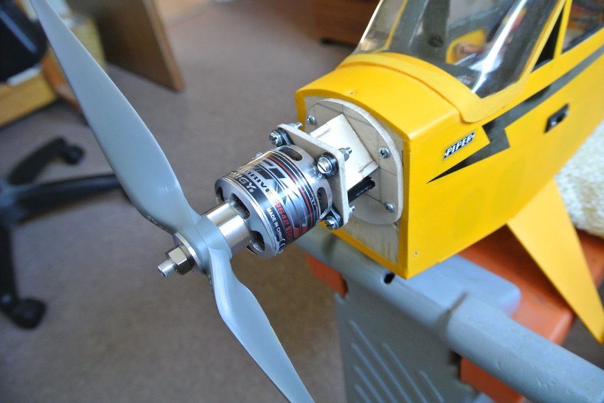

Radio Controlled Aircraft
As shown in the photo of my test rig, I chose to use the shaft end of the outrunner motor to mount the prop and so fitted the motor using the mount supplied with the kit. However, the front former, to which the motor is bolted, was a little small, resulting in the bolt holes being too close to the edge. The original design (for a brushed motor) had two bolt holes nearer the centre. So I made a new front former from some scrap ply. Being die-cut, the edges of the other parts were crushed rather than cut and were a very sloppy fit. So I packed out the joints with slivers of ply, tacked them in place with a spot of thin CA and then adjusted them against a square whilst using medium CA. The whole thing seems a little flimsy, but I will see how it performs. I added the ESC tray astride the first tall former and used a piece of Velcro to hold the ESC in place.
 Unfortunately I had not recognised that my enlarged front former was too wide for the the cowl, which tapers towards the front. However, I was able to reduce the width of the former to that of the motor X mount, rounding the top corners to match the shape of the mount. With this adjustment, the cowl could be slid over the front, with plenty of clearance.
Unfortunately I had not recognised that my enlarged front former was too wide for the the cowl, which tapers towards the front. However, I was able to reduce the width of the former to that of the motor X mount, rounding the top corners to match the shape of the mount. With this adjustment, the cowl could be slid over the front, with plenty of clearance.
The only problem I found was that the prop adapter is too large to fit through the hole, as defined by an indentation, in the front of the cowl. I could cut the hole larger, but the curve of the indentation gives a better finish. So I used the collet that came with the motor to restrict how far the adapter slides on to the shaft and fitted the cowl before fitting the adapter. This looks good, since the curve of the adapter matches the curve of the indentation. My only concern is that to remove the cowl, so as to get at the motor, I need to remove the adapter, which is 'squashed' on to the shaft by the prop nut. Strangely, an old ball-joint splitter (for use on a car) allows me to pull off the adapter.
Cutting the plastic cowl was quite fiddly. Apart from the prop shaft hole I had to cut two other small holes at the front and a larger hole underneath, as well as trim the edge that meets the fuselage. I found that cutting them roughly by drilling holes and using curved scissors or a knife, followed by using needle files worked well and gave a neat finish.
I then temporarily installed the receiver and battery and tested that the motor turned without fouling the mount or the cowl.
Next I moved on to the servos and pushrods. The instructions with the kit say that any 'mini' servos can be used. However, the dimensions of those servos currently classified as 'mini' at my local model shop are too large to fit the holes in the servo mounting plates. However, the HobbyKing site classifies servos between 11 and 20 grammes as 'mini' and so I chose the Turnigy MG90S servo, which has metal gears. These servos are very small and so I did some calculations. Using an available torque calculator and assuming that each control surface is rectangular at the maximum cord (so as to be on the safe side), then at a maximum speed of 45 mph, a control surface deflection of 15 degrees and a servo deflection of 45 degrees, the following torque is needed for each control surface:
- Elevator 2.2 N-cm (0.22 kg-cm, 3.08 oz-in)
- Ailerons 0.62 N-cm (0.063 kg-cm)
- Rudder 1.013 N-cm (0.103 kg-cm)
Now my chosen servos claim to provide a torque of between 1.8 and 2.2 kg-cm (corresponding to 4.8 to 6.0 Volts) and so should be more than capable. My only problem, however, was that they are too small for the holes in the die-cut servo mounting plates. So I cut some pieces of scrap ply to fit behind the hole and to fill the edge of the hole so as to reduce the width. I did the same to the aileron servo tray in the wing. You can see in the photo that I have temporarily positioned the servo tray in the fuselage, linking the pushrod with a pin rather than bending the pushrod wire. The position of the servo tray will be fixed when I balance the model.
You can see from this photo that I temporarily installed the control horns on the rudder and elevator, made the pushrods from square-section balsa strips and wire and cut the slots for both to pass through the fuselage sides. Bending the pushrod wires as shown on the plan caused the pushrods to foul on the fuselage formers, so I had to take them apart a couple of times to alter the bends. I suspect that when I finally refit them (after covering) I will need to do some more fiddling.
Anyway, I have now done as much as I can without covering the model.
Whilst on the subject of motors, I decided to check the balance of the props that I had bought. Rather than buying a balance, I thought that I would make one. It is not particularly clear from the photo, but I used two pointed ends of old ball-point pens as cones, plus the body of a pen that just fitted into one side of the prop. Then a piece of pushrod wire went through the middle. The two glass beakers gave the required height and a level surface.
As it happened, the prop was well balanced. So I did not need to remove any material.
Update
I found it difficult to take off without the plane tipping forward and the propeller hitting the ground. After the first time this happened and broke the motor mount I strengthened it with extra pieces of ply.
However, the next time that it happened the mount was beyond repair. So I decided to reverse the motor and make a more robust mount. With the motor reversed the mount can be much shorter and more robust. The elongated holes in the bulkhead fixing piece take the motor cables.
The base of the mount was made by drawing around the original, but reducing the hole to fit within the box. That box between the vertical pieces of ply should maintain the offset, which is built into the bulkhead. Since I am now using a different propeller adapter (one that screws on to the can) I had to enlarge the hole in the cowl.
After flying the plane, and trimming it, I need to add to the offset, since the rudder trim is too large.